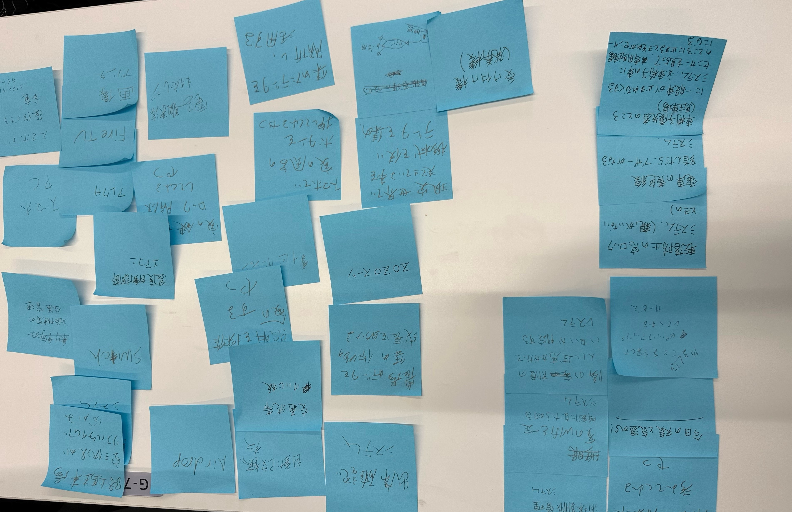
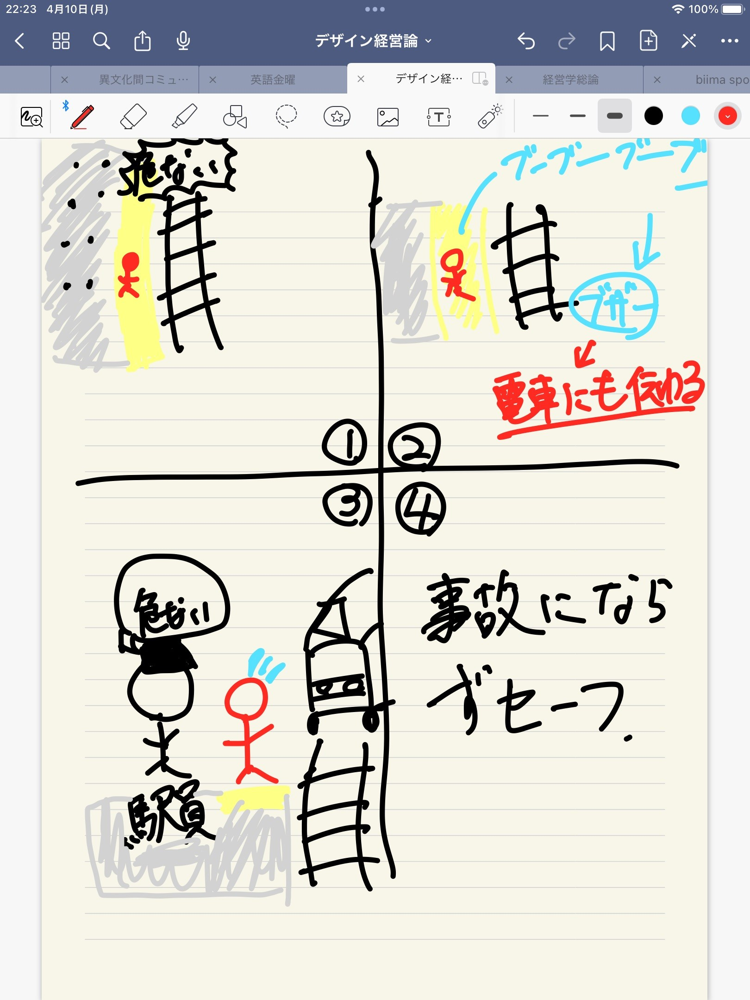

1.IOTとは？
IOTっていうのはinternet of systemのことを指す。従来インターネットに接続していなかったものが、ネットワークを通じてサーバーとクラウドサービスに接続され、相互に情報を交換できる仕組みのこと！事例を挙げると、交通事故掲示板！！ 事故が発生したときに現場にパトロール隊が行き、事故を報告。それをインターネットを介して情報を伝えることで、交通状況を知ることができる！！
IOTって意味あんの？モノがインターネットとつながることで、これまで埋もれていたデータをサーバー上で処理、変換、分析、連携することが可能になる！！このようなIOTの技術を活用することで、より高い価値やサービスを生み出すことができる！！ さっきの交通事故掲示板だと、事故が起こりやすいところの把握ができる。そこに減速！などの注意を促す看板や電光掲示板をつけることで、未然に事故を防ぐことにつながる！
グループ案

漫画事例～駅のホーム黄色い線踏むとブザーなる装置～
